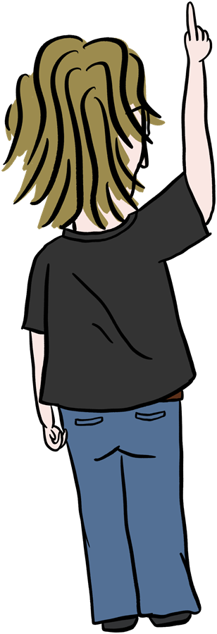
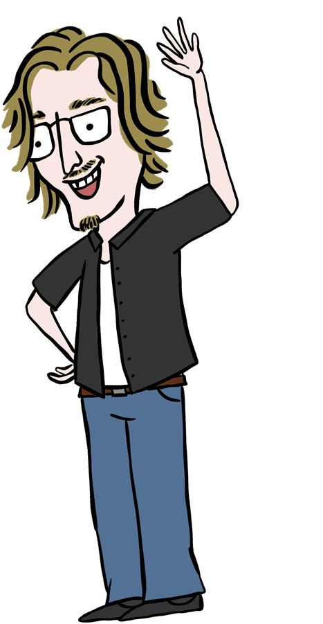

Leo Pfyl
zeichnet, animiert, macht Plakate – und manchmal auch Webseiten.
runter scrollenFrisch aus dem Heft
← an der Leine ziehen →

Das da oben sind meine Lieblinge.
Der Rest liegt hier:
Das bin ich (in echt)
Hoi, ich bin Leo. Ich zeichne eigentlich ständig – und irgendwann fangen die Zeichnungen an, sich zu bewegen.
Hier kommt noch ein bisschen mehr über dich hin.
der bin auch ich ↓

Was riecht da so gut?
WUSCH!
Autsch. Schreib mir lieber.
Schreib mir was rein
Ein Auftrag, eine Idee oder einfach Hallo? Schreib mir:
hallo [at] leopfyl.choder find mich hier: